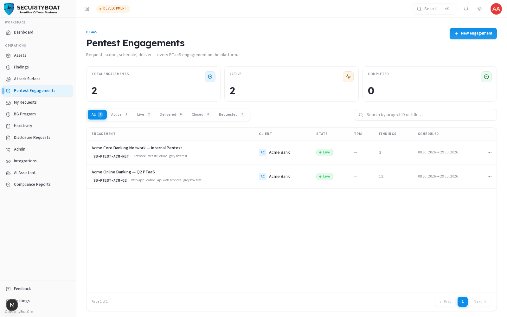
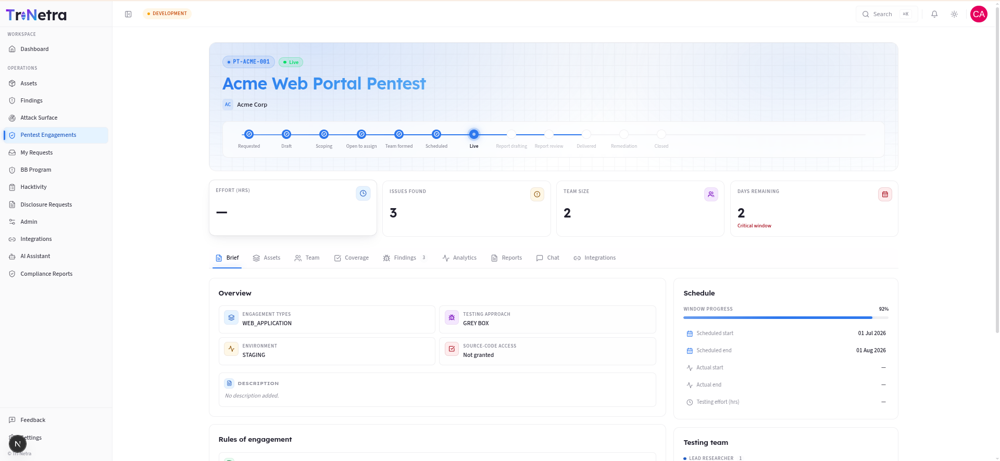
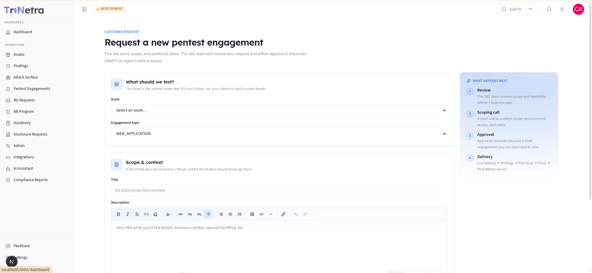
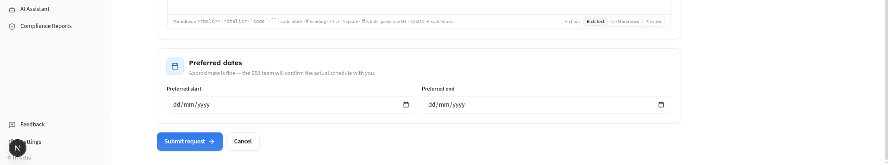
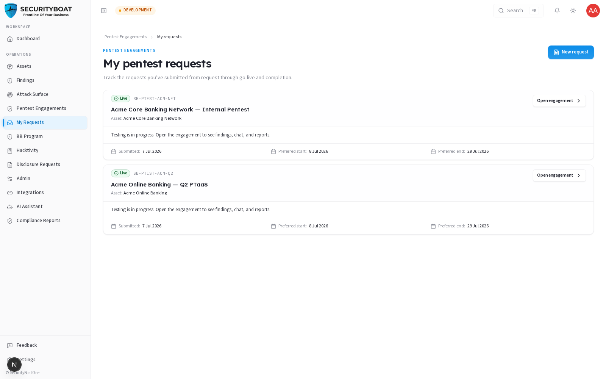

06. Engagements
6. Engagements (PTaaS)
6.0 What an engagement is and how the PTaaS model works
An engagement is a scheduled penetration test of one of your assets, run by SecurityBoat's testing team. "PTaaS" (Penetration Testing as a Service) means the whole lifecycle — requesting, scoping, testing, reporting, and retesting — happens on this platform instead of over email and PDFs.
The lifecycle runs through a series of states. You don't see all of them (many are internal), but understanding the arc helps you know where your test stands:
Requested → Draft → Scoping → Open for Bids → Team Formed → Scheduled
→ Live → Report Drafting → Report Review → Delivered → Remediation → Closed
| State | What's happening | Visible to you? |
|---|---|---|
| Requested | You submitted a request; awaiting Tri-Netra review. | ✅ |
| Draft | Approved; you can still refine scoping details. | ✅ |
| Scoping / Open for bids / Team formed / Scheduled | Internal prep: scope lock, tester selection, scheduling. | ❌ (staff-only) |
| Live | Testing is in progress. | ✅ |
| Report drafting / Report review | Testers are writing and reviewing the report. | ✅ |
| Delivered | Final report issued. | ✅ |
| Remediation | You're fixing; retest may follow. | ✅ |
| Closed | Engagement complete. | ✅ |
Why some states are hidden: the pre-LIVE steps (choosing testers, agreeing internal scope) are SecurityBoat's operational workflow. Exposing them would be noise for you and could leak tester or financial details. The platform strips internal fields from anything a client sees. To track a request before it goes live, use My requests (§6.4), which shows a simplified status without the internal machinery.
6.1 What each client role can do
| Action | Client Admin | Client TPM | Client Viewer |
|---|---|---|---|
| View own-org engagements (visible states) | ✅ | ✅ | ✅ |
| Open engagement detail (Brief, Findings, Reports…) | ✅ | ✅ | ✅ |
| Submit a new pentest request | ✅ | ✅ | ❌ |
| Edit scoping details while in Draft | ✅ | ✅ | ❌ |
| Drive findings remediation (see Findings guide) | ✅ | ✅ | ❌ |
Why you request instead of "create": a client can't directly spin up a live engagement — scope, testers, and scheduling need Tri-Netra review. So clients file a request (a
Requestedengagement); once Tri-Netra approves it, it becomes aDraftengagement you can track end to end.
Navigation
Click Pentest Engagements in the main sidebar menu.
6.2 The Engagements list

KPI strip: Total engagements · Active · Completed — computed from your visible set.
Filter pills (state buckets): the 11 internal states are grouped into friendly buckets so you can filter quickly:
| Bucket | Includes |
|---|---|
| All | Everything visible to you. |
| Active | Draft/Scoping/…/Live/Report stages (in-flight work). |
| Live | Live + report drafting/review. |
| Delivered | Delivered + Remediation. |
| Closed | Closed. |
| Requested | Your pending engagement requests. |
Each pill shows a live count. There's also a search box (matches Project ID or title). (A per-client dropdown appears only for users who span multiple orgs; as a single-org client you won't see it.)
Columns: Engagement (title + Project ID + sub-type/testing approach) · Client · State · TPM (your SecurityBoat project manager) · Findings (count) · Scheduled (start → end). Click a row — or the ⋮ menu (Open · View bids · Open checklist) — to open it. Paginated at 10/page.
6.3 The engagement detail page

Opening an engagement shows a header (title, state, findings count, days remaining) and a set of tabs. What you can act on depends on the state and your role, but you can generally read all of these on your own engagements:
| Tab | What it shows / does |
|---|---|
| Brief | Overview: scope, testing approach, schedule, state history. |
| Assets | The asset(s) under test and their scope. |
| Team | The SecurityBoat testers/TPM assigned. |
| Coverage | The testing checklist/methodology coverage — what was tested. |
| Findings | All findings for this engagement (subject to the verified-only visibility rule — see the Findings guide). |
| Analytics | Charts: severity breakdown, progress over time. |
| Reports | Inline preview of the engagement report. Download PDF is enabled once the report is marked final (Approved / Post-retest final). |
| Chat | Message the engagement team directly. |
| Integrations | Push findings to connected tools (e.g. Jira). |
Reports tab nuance: you can preview the report as it progresses, but the Download PDF button only activates when the report reaches a final state. This prevents circulating a draft report as if it were the deliverable.
6.4 Requesting a pentest (Client Admin / Client TPM)
From Pentest Engagements (or My requests) click New request to open the request form.


Fields:
| Field | Type | Required | Validation | Meaning / use case |
|---|---|---|---|---|
| Asset | Dropdown | ✅ | Scoped to your org's assets | The system to be tested. If it's missing, add it under Assets first. |
| Engagement type | Dropdown | ✅ (defaults to Web Application) | One asset-type | The kind of test (Web App, API, Mobile, Network, …). |
| Title | Text | ✅ | 3–255 chars | A recognisable label, e.g. "Q3 2026 production pentest". |
| Description | Rich text | — | — | Business context, special handling, anything testers should know up front. |
| Preferred start | Date | — | — | Approximate is fine — Tri-Netra confirms the real schedule. |
| Preferred end | Date | — | — | Your target window close. |
What happens after you submit:
- Review — Tri-Netra reviews scope and feasibility (typically within 1 business day).
- Scoping call — a short call to confirm scope, environment, access, and dates.
- Approval — an approved request becomes a Draft engagement you can track. (A rejected request comes back with a reason.)
- Delivery — Live testing → findings → pre-final → final → post-retest report.
While the engagement is in Draft, you (Client Admin / Client TPM) can still edit scoping details before Tri-Netra moves it into Scoping.
6.5 My requests — tracking pre-live work

Because pre-LIVE engagement states are hidden from the main list, My requests is your window into requests that haven't gone live yet. Each card shows a simplified status:
| Status | Meaning |
|---|---|
| Submitted | Received; awaiting review. |
| Approved — preparing | Approved; scope/testers being arranged; live soon. |
| Live | Testing in progress — open the engagement for findings, chat, reports. |
| Completed | Closed; findings and reports remain available. |
| Closed | Closed before testing started; contact your account team. |
Cards show the project ID, title, asset, and your submitted/preferred dates. When a request goes live, an Open engagement button links straight to the full detail.
Best practices
- Give rich context in the request description — the more testers know up front, the less back-and-forth during scoping.
- Keep the asset scope current before requesting so there's nothing to clarify.
- Use the engagement Chat for questions during Live testing instead of email.
- Wait for "final" before circulating the report — the Download PDF button tells you when it's official.
Troubleshooting
| Symptom | Cause / Fix |
|---|---|
| My engagement disappeared from the list | It moved into an internal pre-LIVE state (Scoping/Team forming). Track it under My requests until it goes Live. |
| No "New request" button | You're Client Viewer (read-only). Ask a Client Admin / Client TPM. |
| Download PDF is greyed out | The report isn't final yet (still drafting/review). It enables at Approved / Post-retest final. |
| Can't pick my asset in the request form | The asset isn't registered in your org yet — add it under Assets first. |
← Previous: Findings | Next: My Requests →